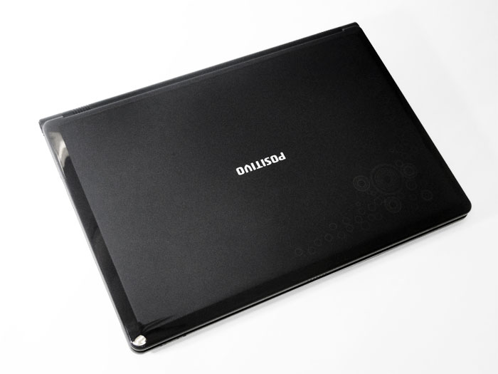

20 de novembro de 2021
Meu primeiro notebook

Meu primeiro notebook foi um Positivo Mobile usado. Ele possuía um processador Intel Core i5 de 1ª geração, 4 GB de RAM e 160 GB de armazenamento. Poucos dias após a compra, a tela do notebook queimou e fiquei meses sem poder utilizá-lo. No entanto, fui grato por essa conquista, pois reconheci que ela foi um grande passo nos meus estudos. Acabei comprando um monitor externo para poder voltar a usá-lo.